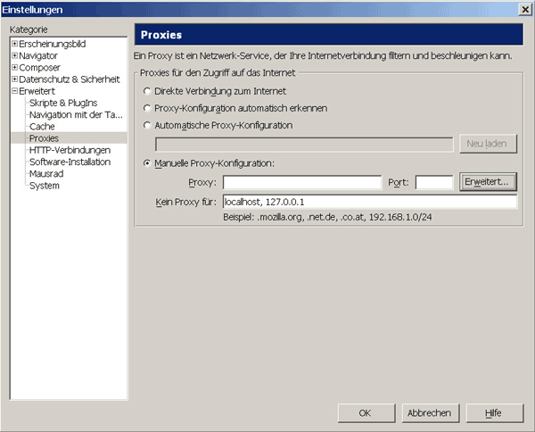

Browsereinstellungen
Inhalt
Browsereinstellungen
Inhalt  Browservorbereitung andere Browser
Vermeiden von Datenspuren
Browservorbereitung andere Browser
Vermeiden von Datenspuren
Browsereinstellungen
Inhalt Browservorbereitung andere Browser
Vermeiden von Datenspuren
JonDos empfiehlt den bereits fertig konfigurierten, portablen JonDoFox zum sicheren, anonymen Websurfen. Er ist als vollständiger Browser (Windows) oder als Firefox-Profil für alle Betriebssysteme verfügbar.
Um stattdessen JonDo in SeaMonkey einzurichten gehen Sie folgendermaßen vor:
Wählen Sie im Menü Bearbeiten das Untermenü Einstellungen.... Danach öffnet sich das Einstellungsfenster. Öffnen Sie den Ast Erweitert und aktivieren Sie in dem Einstellungsfenster Proxies den Punkt Manuelle Proxy-Konfiguration.
Wollen Sie Adressen festlegen, für die JonDo nicht verwendet werden soll, so können Sie im Feld Kein Proxy für: Ausnahmen festlegen, durch einfache Kommas getrennt.
Um den Proxyserver einzustellen, klicken Sie auf die Schaltfläche Erweitert. Wählen Sie Gleichen Proxy für alle Protokolle verwenden und tragen sie nun 127.0.0.1 als Server und als 4001 als Port ein.

Es wird empfohlen auch Proxyeinstellungen auf JonDo zu legen, die JonDo nicht unterstützt, um eine versehentliche Deanonymisierung zu vermeiden. Deshalb wurde oben der Punkt Gleichen Proxy für alle Protokolle verwenden gewählt.
Hinweis: Falls Sie im JonDo einen anderen Listenerport eingestellt haben, müssen Sie diesen anstatt 4001 eintragen.
Browsereinstellungen
Inhalt Browservorbereitung andere Browser
Vermeiden von Datenspuren